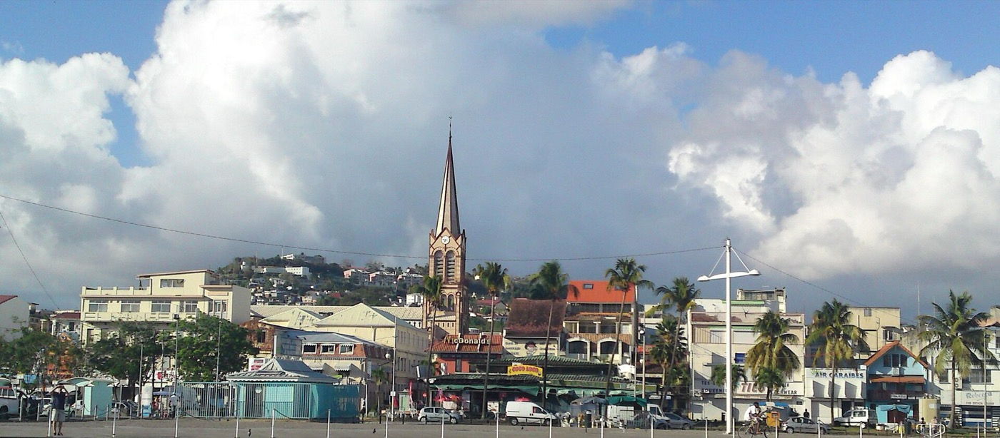

Trouver le bon kiné, commune par commune.

Toutes les communes
Vérifiés d'abordDu Nord vert aux plages du Sud.
Chaque photo ouvre l'annuaire sur la commune où elle a été prise.
Combien de kinés pour 10 000 habitants ?
Kinés de l’annuaire par commune, rapportés à la population INSEE. Les 29 kinés du centre de rééducation de Lajus (Le Carbet) ne sont pas comptés. Cliquez une commune pour voir ses praticiens.
Sources : Ordre des masseurs-kinésithérapeutes (inscrits), INSEE via geo.api.gouv.fr (populations légales).
Rééducation ciblée, là où on la cherche le plus.
Domaines déclarés par les praticiens eux-mêmes (IPPP) ou affichés par Doctolib. Une fiche peut en compter plusieurs.
Une liste vérifiée, source par source.
La base est l'annuaire officiel de l'Ordre des masseurs-kinésithérapeutes : — inscrits avec une adresse en Martinique (octobre 2026). Doctolib, l'IPPP et PagesJaunes complètent les spécialités et les téléphones. Les fiches « Keskeces seul » n'ont été retrouvées dans aucune autre source : elles peuvent être inexactes.
Spécialité « Kinésithérapie » : profession affichée par Doctolib. Les autres spécialités ne sont indiquées que si Doctolib ou l'IPPP les mentionnent. Les téléphones ne sont affichés que lorsqu'une source publique les donne. Vérifiez les coordonnées et qualifications auprès du praticien ou de l'Ordre des masseurs-kinésithérapeutes de Martinique.
Photos Wikimedia Commons : Front de mer de Fort-de-France, Scott S. Bateman (CC BY-SA 4.0) · Plage de Madiana à Schœlcher, Remy Gumbs (CC BY-SA 3.0) · Rocher du Diamant et morne Larcher, G21designz (CC BY-SA 4.0) · Fort-de-France, Jean-Louis Lascoux (CC BY-SA 3.0) · Montagne Pelée, G. Mannaerts (CC BY-SA 4.0) · La Pelée vue du Carbet (domaine public) · Rocher du Diamant et Grande Anse des Salines, Thérèse Gaigé (CC0) · Presqu'île de la Caravelle, Enrevseluj (CC BY-SA 4.0) · Anse à l'Âne (domaine public). Photos recadrées et teintées.


_-_01.jpg){kind=link}